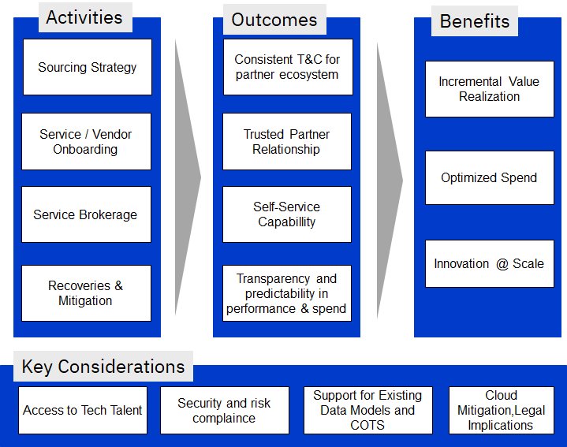
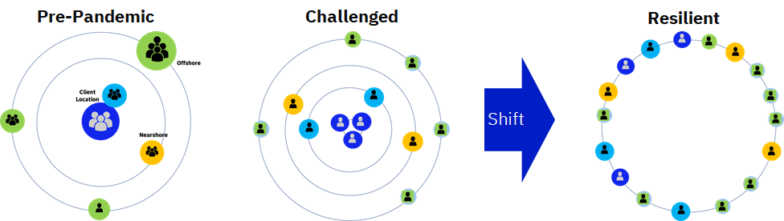

Digital Platforms & Supply Chains
Table of Contents
Overview
This section tries to answer the following questions:
- How do I create a platform architecture to enable developers and business users to create business value?
- How do I best utilise and access an ecosystem of partners to add value to what we do?
- How has the recent pandemic changed traditional location-based working?
Digital Platforms
Leading digital organisations are creating scalable, flexible and multi-level platforms that can be easily consumed by developers, business users and partners:
- Business Platforms - Developing business platforms and services that can be re-used within the rest of the organisation (both business users and development teams) and with partners and B2B customers
- Technology Platforms - Creating platforms on-top of cloud services that embed automation, controls and security that are easily consumable by developers ‘as code’ or via a self-service portal via a single pane of glass
| Digital Platforms |
|---|
 |
The key drivers for such platforms are:
- Engineered with open interfaces, ’standard’ based and easy to connect to
- Are aligned and pre-built to architectural, service, compliance and security standards
- Removes a level of operations that needs to be performed by developers so they can focus on adding value and creating digital products
- Adds value on-top of ‘out-of-the-box’ cloud and technology services
- Provides a set of stable core components, but which can support variety and evolution
- Easily extensible, enabling scalability, not just on demand but based on strategy
- Encourages and facilitates innovation and novel usage
- Opens up a business capability to be accessed by partners and customers
- Allows the rest of the organisation and partners to add value and capture value through the interfaces
Business platforms are built upon a foundation of technology platforms, connected in an open and transparent way
- Each platform provides a range of services that can be easily publish and consumed to construct digital products and services
- These are surfaced either via APIs, CLI, self-service catalogues or through other user interfaces and visualisation engines (i.e. codeless BPM)
- These can be combined together via open API and connectors
- Each platform service should also provide APIs to monitor and operate services to provide visibility of availability and performance
| Digital Platform Functions |
|---|
 |
Partnering & Sourcing
An effective IT Supply Chain improves and organisation flexibility, cost effectiveness and ability to build capability.
What is the IT Supply Chain?
The process off managing interactions with cloud providers (platform vendors, SaaS providers, service vendors) formally by selecting them based on their ability to meet identified requirements and managing performance against the agreed upon commitments within the Service Catalogue.
Some of the key focus areas in this function include:
- Migrating to as-a-service commercial models for both technology infrastructure enabled by cloud computing and a flexible workforce that delivers outcome-driven engagements
- Adopting a more liquid workforce as they try to bridge the skill gaps resulting from rapid changes in technology
- Implement the right mix of local and global focus given the flexibility on cloud, new ways of working and need for shorter delivery cycles with high business involvement
What benefits does it bring?
| Benefits from IT Supply Chain |
|---|
|  |
Considerations Design when designing your IT Supply Chain
- Collaborative Sourcing Relationships - Shift away from focus on deliverables and service levels. Focus on a sourcing philosophy to embrace a partnership approach that can result in collaborative processes, skill development
- Managed Capacity - As enterprises continuously evolve their strategies and roadmap, they would need to pull in capabilities and services on Demand
- Open collaboration tooling - The new ways of working would need collaborative working practices across microsites. Supplier base model will need to adjust to match the DevOps Lifecycle
- Service Brokerage and Orchestration - Provide a centralized catalog of internal and external cloud, business platform and Open APIs to fuel rapid innovation across the enterprise
- Multisourcing Strategies - Unlike the conventional tower-based sourcing, Continuous Delivery in a cloud world require flexible sourcing strategies that allow multiple vendors collaborate with clearly defined roes
- Opex Centric Consumption driven planning - The IT service framework now prices IT Services incrementally from the IT vendors to get accurate Operational Expense forecasting. Consumption driven planning with Business Product Owners
- Predictive Demand Planning - Use in-depth analysis and predictive forecasts to anticipate demand and initiate sourcing with sufficient lead times
- Monitoring - Globally monitor and control all local / regional cloud service consumption for continuous platform optimisation. Drive usage analytics and chargebacks through automated single unified plane of control across cloud service providers
- Mitigation - Managing Cloud Platform risks like Vendor-lock-in, latency, security, and availability as an integral part of the Sourcing Strategy
Dynamic Delivery
Pre-pandemic, delivery models were optimised with delivery across client site, nearshore and offshore delivery centres. To balance cost and value, enterprises had Co-located garages for experience and innovation complimented by distributed Agile practices.
With the pandemic, this was challenges as business continuity came to the fore. Enterprises had to deal with Dispersed teams & Individual silos, lack of certainty and change in priority of projects as well as security concerns - truly hindering innovation.
Shift 1
Enterprises initially focussed on recovering from this situation and getting back into being a resilient organization. This shift was focused on Employee safety, making existing team members virtually equidistant, bringing certainty to Program delivery, increasing portability of tasks and restoring Innovation.
| Resilient |
|---|
|  |
This shifted focus on 100% Cloudified Delivery Methods by adopting to Virtual Garage models and updated Security procedures and getting their teams skilled in virtual execution.
Shift 2
Having realized the longetivity of the situation and the ability to change, enterprises are evolving further to generate value in spite of the handicap. Delivery across sites and individuals are being optimized for skill and cost (hybrid and variable), Automation has been taken up a notch in the Cloudified Delivery Platforms.
| New Normal |
|---|
 |
The focus is now on building the ability in the enterprise to absorb shocks from external unforeseen events and be able to carry out any task, at any time, from anywhere. This, in turn, as offered an improved value and cost profile compared to pre-pandemic model,